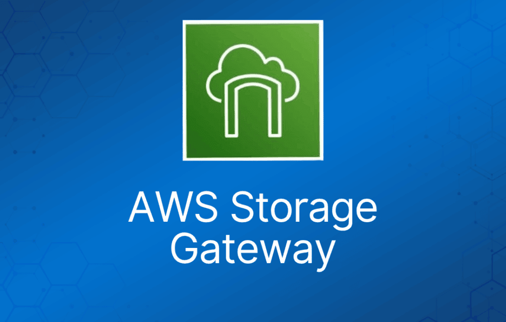

AWS Storage Gateway 服务实现了本地环境与 AWS 云之间的混合存储。
它通过在本地缓存频繁访问的数据来提供低延迟性能，同时将数据安全、持久地存储在 Amazon 云存储服务中。
通过一台在本地运行的虚拟机实现（VMware 或 Hyper-V 虚拟设备）。
提供由 Amazon S3 和 Glacier 支撑的本地存储资源。
常用于灾难恢复准备，将数据同步到 AWS。
AWS Storage Gateway 支持三种存储接口：文件（file）、卷（volume）和磁带（tape）。
下表列出了各类网关及其接口和使用场景：
| 新名称 | 旧名称 | 接口 | 使用场景 |
| File Gateway | 无 | NFS、SMB | 允许本地或 EC2 实例通过 NFS 或 SMB 挂载点将对象存储到 S3 |
| Volume Gateway Stored 模式 | Gateway-Stored Volumes | iSCSI | 将本地数据异步复制到 S3 |
| Volume Gateway Cached 模式 | Gateway-Cached Volumes | iSCSI | 主数据存储在 S3，频繁访问的数据在本地缓存 |
| Tape Gateway | Gateway-Virtual Tape Library | iSCSI | 与现有备份软件配合使用的虚拟介质转换器和磁带库 |
每个网关只能提供一种类型的接口。
任何类型的网关设备与 AWS 存储之间传输的所有数据都使用 SSL 加密。
默认情况下，AWS Storage Gateway 存储在 S3 中的所有数据都使用 Amazon S3 托管加密密钥（SSE-S3）进行服务器端加密。
使用 file gateway 时，你可以选择为每个文件共享配置使用 AWS KMS 托管密钥（SSE-KMS）来加密对象。
File Gateway
File gateway 提供一个虚拟的本地文件服务器，让你能够以对象形式在 Amazon S3 中存储和检索文件。
可用于本地应用，也可用于需要在 S3 中使用文件存储来处理对象类工作负载的 Amazon EC2 应用。
仅用于扁平文件（flat file），直接存储在 S3 上。
File gateway 通过 SMB 或 NFS 访问 Amazon S3 中的数据，并带有本地缓存。
File gateway 支持 Amazon S3 Standard、S3 Standard – Infrequent Access (S3 Standard – IA) 和 S3 One Zone – IA。
File gateway 支持客户端使用 NFS v3 和 v4.1 连接网关。
支持 SMB 的 Microsoft Windows 客户端可以连接 file gateway。
单个文件的最大大小为 5 TB。
Volume Gateway
Volume gateway 是支持块存储卷（block-based volume）的网关系列，之前称为 gateway-cached 和 gateway-stored 模式。
块存储 —— 基于 iSCSI。
Cached Volume 模式 —— 整个数据集存储在 S3 上，最常访问的数据缓存在本地。
Stored Volume 模式 —— 整个数据集存储在本地，并异步备份到 S3（EBS 时间点快照）。快照是增量式的并经过压缩。
每个 volume gateway 最多支持 32 个卷。
在 cached 模式下，每个卷最大 32 TB，每个网关最大 1 PB 数据（32 个卷，每个 32 TB）。
在 stored 模式下，每个卷最大 16 TB，每个网关最大 512 TB 数据（32 个卷，每个 16 TB）。
Gateway Virtual Tape Library
用于配合主流备份软件进行备份。
每个网关预配置了介质转换器（media changer）和磁带驱动器。支持 NetBackup、Backup Exec、Veeam 等。
创建虚拟磁带时，你可以选择以下容量之一：100 GB、200 GB、400 GB、800 GB、1.5 TB 和 2.5 TB。
一个 tape gateway 最多可有 1,500 盘虚拟磁带，最大总容量为 1 PB。
管理 AWS Storage Gateway
你可能需要关闭或重启虚拟机进行维护，例如为 hypervisor 打补丁。在关闭虚拟机之前，必须先停止网关。
- 对于 file gateway，直接关闭虚拟机即可。
- 对于 volume 和 tape gateway，先停止网关，重启虚拟机，然后启动网关。
监控 AWS Storage Gateway
在监控 file、cached-volume 和 tape gateway 的缓存使用情况时，以下指标非常有用。
| 指标 | 描述 | 适用于 |
| CacheHitPercent | 从缓存中响应的应用读取所占的百分比。样本在报告周期结束时采集。 单位：百分比 | File、cached-volume 和 tape gateway。 |
| CacheUsed | 网关缓存存储中正在使用的总字节数。样本在报告周期结束时采集。 单位：字节 | File、cached-volume 和 tape gateway。 |